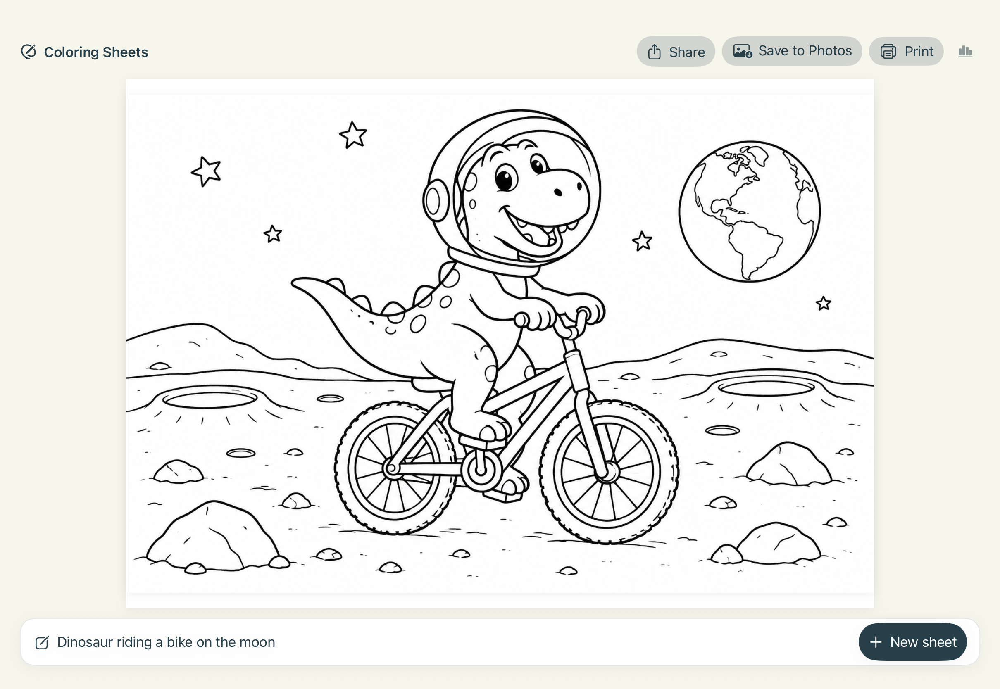

Describe an idea
Type a scene, character, or story prompt and choose the child's age.
An iPhone and iPad app by Jordan Erenrich
WonderLines turns a child's description into a gallery of coloring sheets. Pick a favorite, then save, share, or print it from your iPhone or iPad.
Built with SwiftUI for iOS and iPadOS 17 and later. Available as source code, not as an App Store download.

From imagination to paper
Type a scene, character, or story prompt and choose the child's age.
WonderLines creates up to five compositions. Swipe through the gallery and choose one.
Save a PNG, share it, or open the native print sheet for a page to color.
About the project
WonderLines was created by Jordan Erenrich. This native SwiftUI family app prototype includes an offline demo mode, adjustable age guidance, a landscape coloring page preview, and sharing and printing tools on iPhone and iPad.
The source repository includes the iPad app and its image generation service. Developers can run the demo locally with Xcode; live generation needs a separately deployed service.
Read the setup guide on GitHub